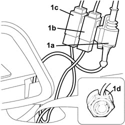
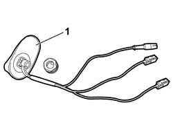

5570T61 MULTI-FUNCTION AERIAL - R R
- Path
- Procedures > 55 ELECTRICAL EQUIPMENT > 5570 ACCESSORIES > 5570T CAR RADIO AND CAR TELEPHONE > 5570T61 MULTI-FUNCTION AERIAL - R R
- Kind
- repair procedure (removal / refitting; the operation number is the code)
- Applies to
- all engines; all production periods
- Interactive page
- https://sloeber94.github.io/elrnDB-fCrm/en/#/194000781
Applies to: all engines; all production periods
 Removing
Removing
 Refitting
Refitting- Open the tailgate.
- Turn the ignition key to the OFF position.
- Disconnect the negative battery terminal.
Description | Connector | |
|---|---|---|
BATTERY |
(both)
Op. 7065C33 SUN BLIND WITH COURTESY MIRROR AND COURTESY LIGHT ONE LH OR RH R R
(all)
Op. 7065C30 GRAB HANDLE (ONE) LEFT, RIGHT OR CENTRE PASSENGER COMPARTMENT INTERIOR - R.R
Op. 7040E51 FRONT MODULAR COURTESY LIGHT ASSEMBLY - R R FOR VERSIONS WITH SUN-ROOF
Op. 7040E46 REAR COURTESY LIGHT ASSEMBLY - R R
Op. 7040B26 LOAD PLATFORM COVER BLIND - R+R
Op. 7040B42 PROTECTION GRILLE FOR ANIMAL TRANSPORT - R and R
(both)
Op. 7040B44 PROTECTIVE GRILL ATTACHMENT ONE R R
(both)
Op. 7040H30 FRONT PILLAR TRIM (ONE), LEFT OR RIGHT - R.R.
(both)
Op. 7040H36 CENTRE PILLAR LOWER ELEMENT (ONE), LEFT OR RIGHT - R.R
(both)
Op. 7040H38 CENTRE PILLAR UPPER ELEMENT (ONE), LEFT OR RIGHT - R.R
(both)
Op. 7040H42 REAR PILLAR TRIM (ONE), LEFT OR RIGHT- R.R
(both)
Op. 7040H50 REAR PANEL (ONE), LEFT OR RIGHT - R.R
Op. 7040H23 COATING FOR SUN/SLIDING ROOF VERSIONS AND ANIMAL TRANSPORTATION GRID - R R
(both)
Op. 5580C52 WINDOW BAG MODULE (ONE) LH OR RH - R.R WITH INTERFERING PARTS REMOVED
1. Working near the tail-light, disconnect the electrical connections of the radio aerial (1a), GPS aerial (1b) and the GSM phone aerial (1c), then unscrew the special nut (1d).
Description | Connector | |
|---|---|---|
1 | Aerial feed/amplifier |

Applies to: all engines; all production periods
1. Working from outside the vehicle, remove the multifunction aerial with leads.

Applies to: all engines; all production periods
Refitting
Removing- Check that the aerial is not damaged.
- Working from outside the vehicle, fit the aerial in position.
- Working from inside the vehicle, tighten the special nut.
- Connect the electrical connections.
Description | Connector | |
|---|---|---|
Aerial feed/amplifier |
(both)
Op. 5580C52 WINDOW BAG MODULE (ONE) LH OR RH - R.R WITH INTERFERING PARTS REMOVED
Op. 7040H23 COATING FOR SUN/SLIDING ROOF VERSIONS AND ANIMAL TRANSPORTATION GRID - R R
(both)
Op. 7040H50 REAR PANEL (ONE), LEFT OR RIGHT - R.R
(both)
Op. 7040H42 REAR PILLAR TRIM (ONE), LEFT OR RIGHT- R.R
(both)
Op. 7040H38 CENTRE PILLAR UPPER ELEMENT (ONE), LEFT OR RIGHT - R.R
(both)
Op. 7040H36 CENTRE PILLAR LOWER ELEMENT (ONE), LEFT OR RIGHT - R.R
(both)
Op. 7040H30 FRONT PILLAR TRIM (ONE), LEFT OR RIGHT - R.R.
(both)
Op. 7040B44 PROTECTIVE GRILL ATTACHMENT ONE R R
Op. 7040B42 PROTECTION GRILLE FOR ANIMAL TRANSPORT - R and R
Op. 7040B26 LOAD PLATFORM COVER BLIND - R+R
Op. 7040E46 REAR COURTESY LIGHT ASSEMBLY - R R
Op. 7040E51 FRONT MODULAR COURTESY LIGHT ASSEMBLY - R R FOR VERSIONS WITH SUN-ROOF
(all)
Op. 7065C30 GRAB HANDLE (ONE) LEFT, RIGHT OR CENTRE PASSENGER COMPARTMENT INTERIOR - R.R
(both)
Op. 7065C33 SUN BLIND WITH COURTESY MIRROR AND COURTESY LIGHT ONE LH OR RH R R
- Connect the negative and positive battery terminals.
Description | Connector | |
|---|---|---|
BATTERY |
Topics linked from this page (16)
- 5580C52 WINDOW BAG MODULE (ONE) LH OR RH - R.R WITH INTERFERING PARTS REMOVED
- 7040B26 LOAD PLATFORM COVER BLIND - R+R
- 7040B42 <x>PROTECTION GRILLE FOR ANIMAL TRANSPORT - R&R</x>
- 7040B44 PROTECTIVE GRILL ATTACHMENT ONE R R
- 7040E46 REAR COURTESY LIGHT ASSEMBLY - R R
- 7040E51 FRONT MODULAR COURTESY LIGHT ASSEMBLY - R R FOR VERSIONS WITH SUN-ROOF
- 7040H23 COATING FOR SUN/SLIDING ROOF VERSIONS AND ANIMAL TRANSPORTATION GRID - R R
- 7040H30 FRONT PILLAR TRIM (ONE), LEFT OR RIGHT - R.R.
- 7040H36 CENTRE PILLAR LOWER ELEMENT (ONE), LEFT OR RIGHT - R.R
- 7040H38 CENTRE PILLAR UPPER ELEMENT (ONE), LEFT OR RIGHT - R.R
- 7040H42 REAR PILLAR TRIM (ONE), LEFT OR RIGHT- R.R
- 7040H50 REAR PANEL (ONE), LEFT OR RIGHT - R.R
- 7065C30 GRAB HANDLE (ONE) LEFT, RIGHT OR CENTRE PASSENGER COMPARTMENT INTERIOR - R.R
- 7065C33 SUN BLIND WITH COURTESY MIRROR AND COURTESY LIGHT ONE LH OR RH R R
- A001 BATTERY
- P025 AERIAL FEED/AMPLIFIER
Topics that link to this page (9)
- N011 RADIO CANNOT BE HEARD, IS HARD TO HEAR
- N013 TELEPHONE AUDIO NOT WORKING
- N014 TELEPHONE WON'T START
- N037 I.C.S. IS NOT CALCULATING ANY ROUTE
- N039 I.C.S. DETECTS INCORRECT POSITION
- N040 NAVIGATOR DOES NOT RECEIVE THE G.P.S. SATELITES
- 7030B12 SLIDING ROOF (ASSEMBLY) - R+R
- 7030B90 SLIDING ROOF FRAME - R R
- 7030B94 REAR SLIDING ROOF - R R